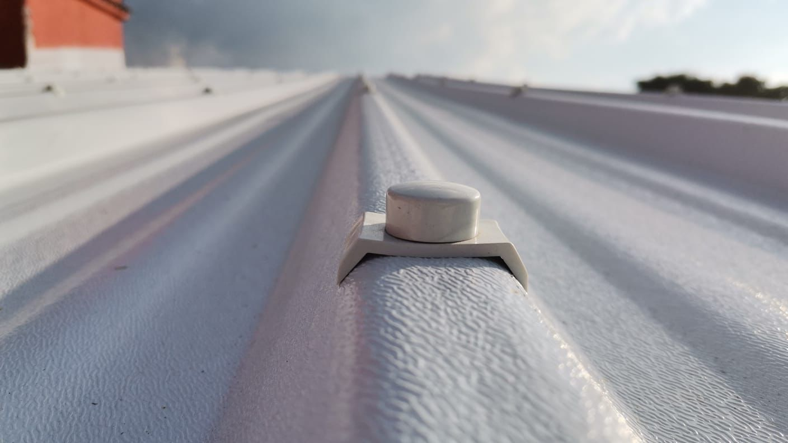

Modelos de láminas

Lámina Troquelada y Tipo Teja
La lámina UPVC es una solución tricapa termoacústica fabricada con cloruro de polivinilo no plastificado, ideal para techos y cerramientos en ambientes industriales, agrícolas y residenciales. Su diseño ofrece alta resistencia al impacto, aislamiento térmico y acústico, protección contra químicos y rayos UV, además de ser ignífuga y antibacterial. Disponible en varias medidas, es una opción duradera, segura y de bajo mantenimiento para estructuras que requieren eficiencia y resistencia.